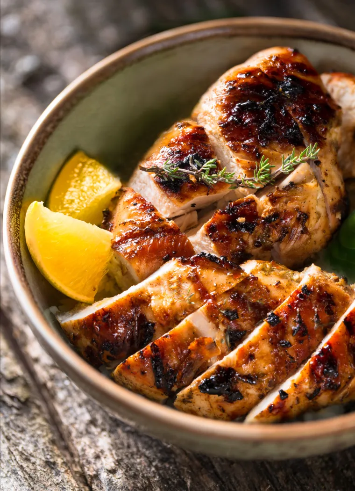

Sometimes in cooking the simplest dishes are the hardest to get right, and grilled chicken is a perfect example. Because boneless chicken breasts are so lean, they often turn out dry, rubbery, and bland. Contrary to popular belief, marinating alone will not save grilled chicken from drying out; in fact, it’s often the marinade that causes the problem!